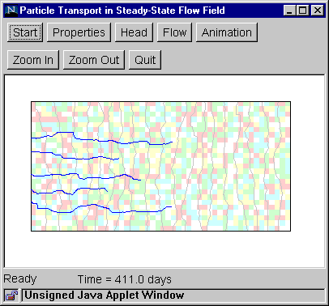

Step 5a: Animation (Flow Path Evolution)
This step shows the evolution of the flow paths computed in Step 4a.
- Click the "Animation" button to bring up the
Animation Dialog Box.
- Set the animation speed by specifying the amount of travel time
(in days or years) that is equal to 1 second of animation time.
The appropriate speed will depend on the domain length, average
hydraulic gradient, and hydraulic properties. For an initial attempt,
try setting 1 second of animation time = 10 days. If the resulting
animation is too slow, then increase the animation speed (for example,
1 second of animation time = 100 days). If the animation is too
fast, decrease the animation speed (for example, 1 second of animation
time = 1 day).
- Set the animation smoothness by specifying
number of frames per second.
- Click "OK" and wait for the window to be
refreshed.
- To start the animation, click anywhere inside
the window, below the buttons.
- Additional clicks alternately freeze and
unfreeze the animation.
- The elapsed travel time is shown at the bottom of the window.

Back to Step 4a
Return to Introduction
|